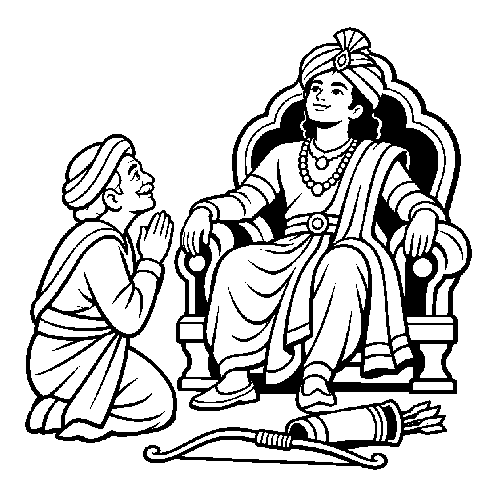

આકાશ તરફ દ્રષ્ટિ કરો: ચોમાસામાં કાળા ડિબાંગ વાદળો ગગનને ઘેરી લે છે, વીજળીના કડાકા થાય છે અને મુશળધાર વરસાદ વરસે છે; લોકો કહે છે કે "આકાશ ઢંકાઈ ગયું, આકાશ બંધાઈ ગયું!" પરંતુ જ્યારે શરદ ઋતુ આવે છે અને પવન વાદળોને ઉડાવી જાય છે, ત્યારે લોકો કહે છે: "આકાશ ખૂલી ગયું, આકાશ મુક્ત થઈ ગયું!" પણ શું વાસ્તવમાં આકાશ ક્યારેય વાદળોથી બંધાયું હતું? શું આકાશમાં વાદળનો એક અંશ પણ પ્રવેશ્યો હતો? કદાપિ નહીં! વાદળો આવ્યા ત્યારે પણ આકાશ અલિપ્ત હતું અને વાદળો ગયા પછી પણ આકાશ તેવું ને તેવું જ રહ્યું! તેવી જ રીતે આ નય આત્માના શુદ્ધ ચૈતન્યસ્વભાવને મુખ્ય કરે છે; વ્યવહારનયની અપેક્ષાએ સંસારી જીવ કર્મબંધ અનુભવે છે અને સાધના દ્વારા કર્મક્ષય કરીને મુક્તિ પામે છે. બંધ અને મોક્ષની કલ્પનાઓથી પર કેવળ એક શુદ્ધ આત્મતત્વને જ નિહાળતો દ્રષ્ટિકોણ એટલે 'નિશ્ચયનય'.
નિશ્ચયનય આત્માના સ્વભાવને મુખ્ય કરીને સાધકને અભયભાવ તરફ દોરે છે. નિશ્ચયનયની અપેક્ષાએ આત્માનું ચૈતન્યસ્વરૂપ કર્મોથી નિરાળું છે; વ્યવહારનયની અપેક્ષાએ જીવ કર્મબંધ અનુભવે છે અને સાધના દ્વારા કર્મક્ષય કરે છે. તેથી “હું મુક્ત જ છું” એવો વાક્યપ્રયોગ નિશ્ચયનયની અપેક્ષા બતાવે છે—તે વર્તમાન બંધન, કર્મફળ કે પુરુષાર્થને નકારતો નથી.
આ નય સાધકને સાધનાના ભારમાંથી મુક્ત કરી પરમ સહજ સમાધિમાં સ્થિર કરે છે.
વાદળ ઘેરાય આભમાં, આભ રહે અસંગ;
નિશ્ચયનયથી ભાળતાં, ચૈતન્ય શુદ્ધ ઉમંગ.
નિશ્ચયે શુદ્ધ સ્વભાવ છે, વ્યવહારે કર્મબંધ;
બંને અપેક્ષા જાણતાં, મુક્તિમાર્ગનો સંબંધ.
આત્માના શુદ્ધ સ્વભાવને ઓળખતાં, કર્મબંધ અને સાધનાના વ્યવહારને પણ યોગ્ય રીતે સમજવો.

ધર્મક્ષેત્રના એક રાજમહેલમાં જન્મેલો એક નાનો રાજકુમાર બાલ્યાવસ્થામાં જંગલમાં ખોવાઈ ગયો હતો. એક ભીલ પરિવારે તેને ઉછેર્યો. તે મોટો થઈને જંગલમાં ધનુષ્ય-બાણ ચલાવતો, કાચા ફળો ખાતો અને પોતાને ભીલ જ માનતો હતો. તે દરરોજ જંગલમાં ભટકતો અને વિચારતો: "હું આખો દિવસ જંગલમાં દોડું છું છતાં મને ભૂખ અને થાક કેમ સતાવે છે? શું મારું જીવન કેવળ આ જંગલમાં શિકાર કરીને જ પૂરું થઈ જશે?" તે યુવાનના અંતરમાં પોતાની સાચી ઓળખ પામવાની ગહન પિપાસા જાગી હતી.
એક દિવસ રાજ્યના વૃદ્ધ પ્રધાન તે જંગલમાંથી પસાર થયા. તેમણે તે યુવાનના મુખ પરનું રાજસી તેજ અને હાથની રેખાઓ જોઈને તેને ઓળખી લીધો! પ્રધાને તેના ચરણોમાં મસ્તક મૂક્યું અને કહ્યું: "કુમાર! નિશ્ચયનયની દ્રષ્ટિએ જુઓ! તમે કોઈ ભીલ નથી, તમે તો આ વિશાળ સામ્રાજ્યના સાક્ષાત્ રાજકુમાર છો! તમે ભલે વર્ષો સુધી ભીલના વસ્ત્રો પહેર્યા અને જંગલમાં રહ્યા, પણ તમારા લોહીમાં વહેતી રાજકુમારતા ક્યારેય નષ્ટ થઈ નહોતી! તમે ક્યારેય ભીલ બન્યા જ નહોતા, તમે રાજા જ હતા અને આજે પણ રાજા જ છો!" આ સાંભળતાં જ તે યુવાનના અજ્ઞાનનું આવરણ ક્ષણવારમાં ફાટી ગયું. તેણે ધનુષ્ય મૂકી રાજમહેલ તરફ પ્રયાણ કર્યું. તેને સમજાયું કે પોતાની રાજકુમાર-ઓળખનું સ્મરણ થવાથી જંગલના વર્ષો ભૂંસાતા નથી; તે સ્મરણ હવે તેના જીવનને નવી દિશા આપી શકે છે. આ દૃષ્ટાંતમાં પણ શુદ્ધ સ્વભાવની ઓળખ કર્મબંધ અને મુક્તિના વ્યવહારને નકારતી નથી. આ બોધથી તેનું ચિત્ત પરમ આત્મગૌરવ સાથે સહજ શાંતિમાં ડૂબી ગયું.
જો જીવ કેવળ નિશ્ચયનયને જ પકડી રાખે અને વર્તમાન પર્યાયના દોષોને દૂર કરવાનો પુરુષાર્થ ન કરે, તો તે ભ્રમણામાં પડીને સંસારમાં ભટકતો રહે છે. આવી એકાંત જડતાથી જીવ વર્તમાન વ્યવહારિક સાધના અને કર્તવ્યોની ઉપેક્ષા કરી બેસે છે અને ક્રમિક પરિણામોને સુધાર્યા વિના અકાળે પૂર્ણતાના મિથ્યા સંતોષમાં રાચે છે.
આ નય આત્માની મૂળ ત્રિકાળી શુદ્ધતાનો સાક્ષાત્કાર કરાવી પરમ શાંતિ અર્પે છે, જેથી ચેતના પોતાના આત્મસ્વરૂપમાં સ્થિર થાય છે.